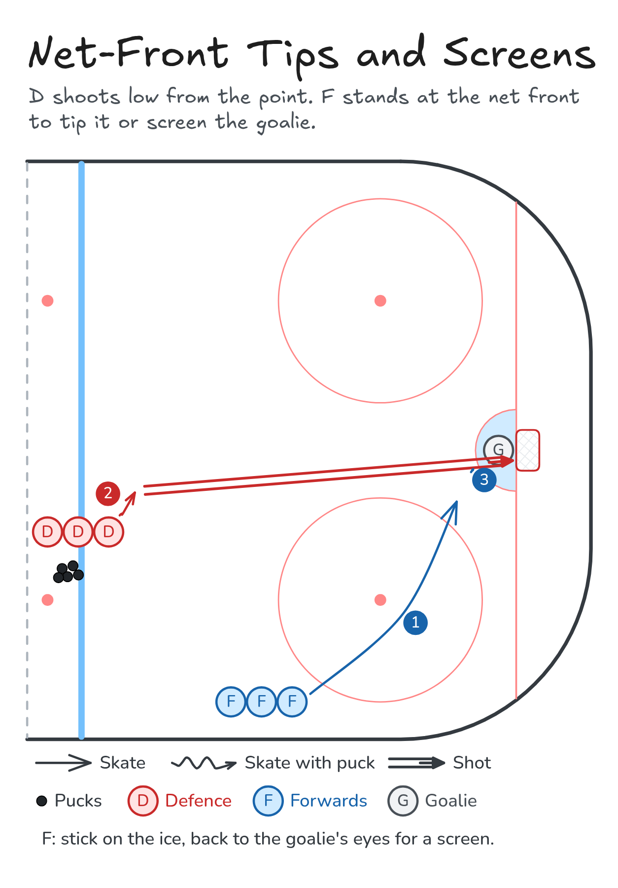

Net-Front Tips and Screens
D shoots low from the point. F stands at the net front to tip it or screen the goalie.
- Half ice
- Shooting
- Defence
Watch
Diagram

Coaching points
- F: stick on the ice, blade facing the shooter.
- Screen: stand between the shooter and the goalie's eyes.
- Tip: soft hands, redirect the puck down.
- D: shoot low and on net. Hard isn't as important as low.
- Everyone: find the rebound.
How it runs
- D at the blue line with pucks, F on the wall.
- The F skates to the front of the net.
- The D steps in and shoots low on net.
- The F tips it or screens the goalie, then goes for the rebound.
- Switch lines.
Downloads

Open the Excalidraw file in Excalidraw to change the diagram.